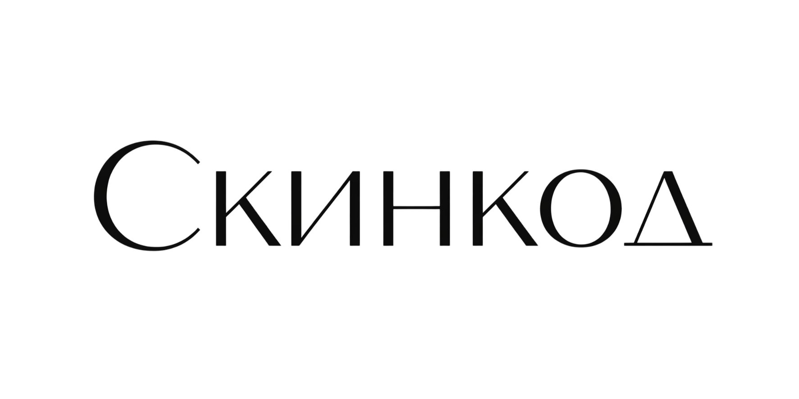

Простой процесс из 4 шагов к идеальному тону
Уточняем подтон и тип кожи — это ключ к точному совпадению оттенка
Вводишь 1-3 тональных средства, которые тебе идеально подходят
Наш алгоритм сопоставляет оттенки по категориям и подтону
Топ-5 рекомендаций с похожими оттенками других брендов
Наш алгоритм анализирует не просто название оттенка, а его характеристики: теплоту, насыщенность, глубину тона. Мы создали систему категорий, которая позволяет находить визуально идентичные оттенки между разными брендами.
Алгоритм сопоставляет оттенки в рамках одной категории с учетом подтона. Если у тебя теплый подтон и средний тон кожи, мы покажем только те оттенки, которые визуально совпадают с твоими — не светлее, не темнее, не другого подтона.
Пройдите простой тест за 2 минуты и получите персональные рекомендации
Начать подбор